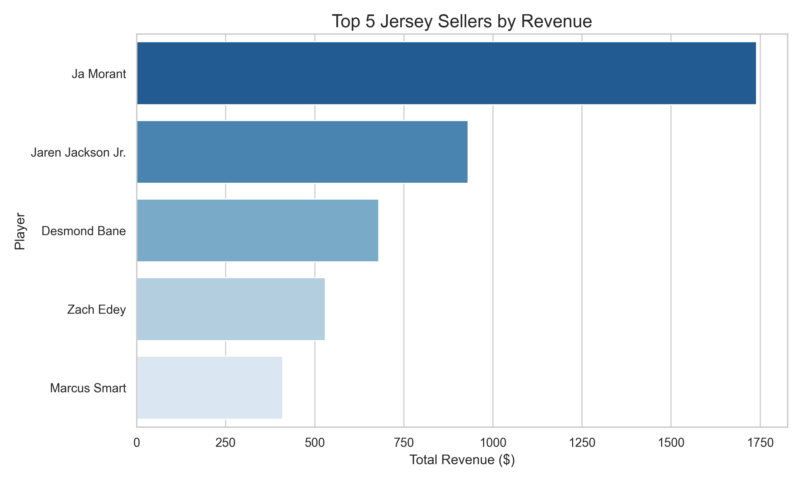
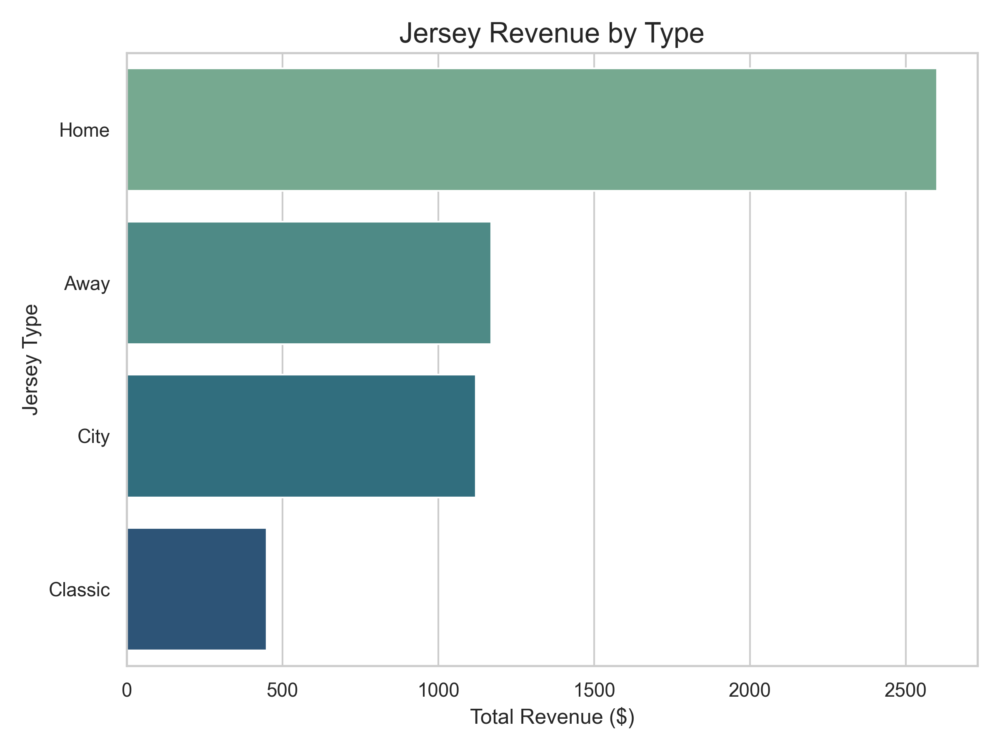
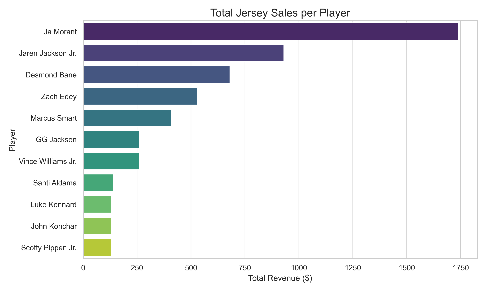
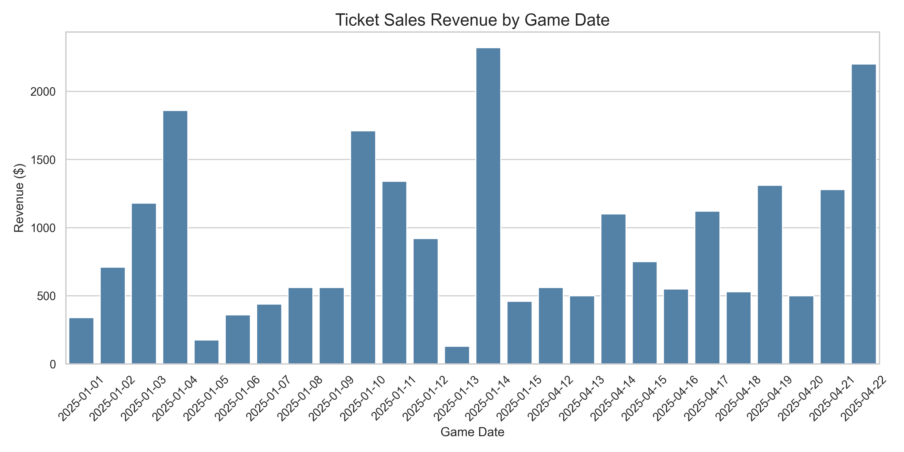
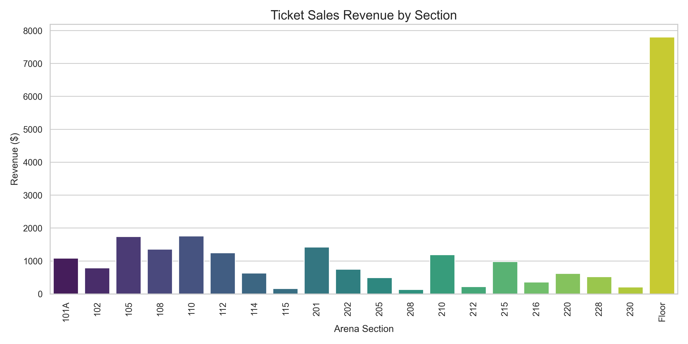
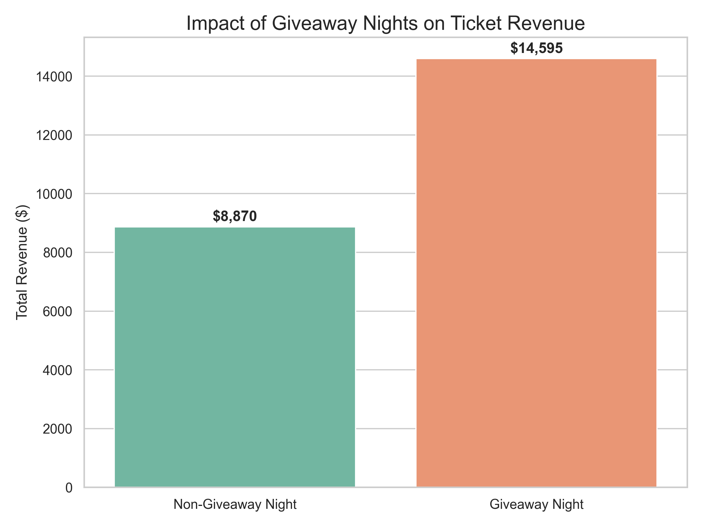

Memphis Grizzlies Database Project
By Daniel Vonder, Jackson Jones, Jack Linder, Evan Schrier, Jayden Patel
By Daniel Vonder, Jackson Jones, Jack Linder, Evan Schrier, Jayden Patel
The Memphis Grizzlies Database Project represents a comprehensive relational database system designed to capture and analyze the multifaceted operations of a professional NBA franchise. This project focuses on the Memphis Grizzlies, the NBA team based in Memphis, Tennessee, which was founded in 1995 and competes in the Western Conference's Southwest Division. The organization, while never having won an NBA championship, has established itself as a competitive franchise with ten playoff appearances in its history, making it a compelling subject for database analysis and business intelligence applications.
The sports and entertainment industry was selected for this project due to its rich data ecosystem and the increasingly analytics-driven nature of modern professional sports organizations. NBA franchises operate as complex business entities that must balance on-court performance with revenue generation, making them ideal candidates for database modeling. The industry presents unique challenges in data management, requiring the integration of player performance metrics, injury tracking, coaching staff changes, ticket sales, merchandise revenue, and game outcomes. Furthermore, the sports industry's emphasis on data-driven decision-making, from player acquisitions to pricing strategies, mirrors contemporary business practices across multiple sectors, providing valuable insights applicable beyond athletics.
This database was specifically structured to explore several key business questions and operational insights. Primary areas of investigation include revenue analysis across multiple streams, particularly examining the relationship between promotional events (such as giveaway nights) and ticket sales performance, as well as identifying top merchandise sellers to inform marketing and inventory decisions. The system enables analysis of player performance metrics to support coaching decisions and player development strategies, while also tracking injury patterns that impact roster management. Additionally, the database documents the mid-season coaching transition from Taylor Jenkins to Tuomas Iisalo in March 2025, allowing for comparative analysis of team performance under different leadership. The project aims to uncover correlations between various factors, such as opponent strength, promotional activities, and player availability, and their impact on both game outcomes and revenue generation, ultimately providing a framework for data-driven strategic planning within a professional sports organization.
The sports and entertainment industry was selected for its rich data ecosystem and analytics-driven nature. NBA franchises operate as complex business entities balancing performance and revenue, requiring integration of player metrics, injuries, coaching changes, ticket sales, merchandise, and game outcomes. This project explores revenue analysis, promotional event impact, merchandise trends, player performance, injury tracking, and coaching transitions — including the March 2025 shift from Taylor Jenkins to Tuomas Iisalo — to support strategic planning.


use neu_student_daniel_vonderwalde;
#Games Memphis won
select * from games where home_team_id = 1 and home_score > away_score;
#Total jersey sales per player
select count(sale_id), player_id, price, count(sale_id)*price as total_sales from jersey_sales group by player_id;
#Total ticket sales per game
select count(ticket_sale_id), game_id, sum(total_price) from ticket_sales group by game_id;
# Total sales in giveaway night
select sum(total_price) from ticket_sales where is_giveaway_night = 1;
# Total sales normal game
select sum(total_price) from ticket_sales where is_giveaway_night = 0;
#Total sales
select sum(total_price) from ticket_sales;
#List all players and their team names.
SELECT r.first_name, r.last_name, t.team_name
FROM Roster r
JOIN Teams t ON r.team_id = t.team_id;
#Show all games with the home and away team names.
SELECT g.game_id, t1.team_name AS home_team, t2.team_name AS away_team, g.home_score, g.away_score
FROM Games g
JOIN Teams t1 ON g.home_team_id = t1.team_id
JOIN Teams t2 ON g.away_team_id = t2.team_id;
#Find all jersey sales with the player name.
SELECT js.sale_id, r.first_name, r.last_name, js.jersey_type, js.price
FROM Jersey_Sales js
JOIN Roster r ON js.player_id = r.player_id;
#Get all injured players and their injury status.
SELECT r.first_name, r.last_name, i.injury_description, i.status
FROM Injuries i
JOIN Roster r ON i.player_id = r.player_id;
#List each coach and their current role.
SELECT c.first_name, c.last_name, sh.role
FROM Staff_History sh
JOIN Coaches c ON sh.coach_id = c.coach_id
WHERE sh.end_date IS NULL;
#Total points scored by each player across all games.
SELECT r.first_name, r.last_name, SUM(s.points) AS total_points
FROM Stats s
JOIN Roster r ON s.player_id = r.player_id
GROUP BY r.player_id
ORDER BY total_points DESC;
#Top 5 jersey sellers (total revenue per player).
SELECT r.first_name, r.last_name, SUM(js.price) AS total_revenue
FROM Jersey_Sales js
JOIN Roster r ON js.player_id = r.player_id
GROUP BY r.player_id
ORDER BY total_revenue DESC
LIMIT 5;
#List all home games for the Grizzlies including opponent and final score.
SELECT g.game_date, t2.team_name AS opponent, g.home_score, g.away_score
FROM Games g
JOIN Teams t2 ON g.away_team_id = t2.team_id
WHERE g.home_team_id = 1;
#Average minutes, points, and rebounds by player.
SELECT r.first_name, r.last_name,
AVG(s.minutes_played) AS avg_minutes,
AVG(s.points) AS avg_points,
AVG(s.rebounds) AS avg_rebounds
FROM Stats s
JOIN Roster r ON s.player_id = r.player_id
GROUP BY r.player_id;
#Find all players who scored 30+ points in any game.
SELECT DISTINCT r.first_name, r.last_name
FROM Stats s
JOIN Roster r ON s.player_id = r.player_id
WHERE s.points >= 30;
#Total ticket revenue per home game + opponent name.
SELECT g.game_id, t2.team_name AS opponent,
SUM(ts.total_price) AS total_revenue
FROM Ticket_Sales ts
JOIN Games g ON ts.game_id = g.game_id
JOIN Teams t2 ON g.away_team_id = t2.team_id
WHERE g.home_team_id = 1
GROUP BY g.game_id;
#Which jersey type (Home, Away, City, Classic) generates the most revenue?
SELECT jersey_type,
SUM(price) AS total_revenue
FROM Jersey_Sales
GROUP BY jersey_type
ORDER BY total_revenue DESC;
#What percentage of total ticket revenue comes from premium sections (Floor + lower bowl)?
SELECT
SUM(CASE WHEN section LIKE 'Floor' OR section LIKE '1%' THEN total_price ELSE 0 END) * 100.0
/ SUM(total_price) AS premium_percentage
FROM Ticket_Sales;
#Which home games had the highest average ticket purchase size (revenue per ticket)?
SELECT g.game_id, g.game_date,
SUM(ts.total_price) / SUM(ts.quantity) AS avg_ticket_price
FROM Ticket_Sales ts
JOIN Games g ON ts.game_id = g.game_id
WHERE g.home_team_id = 1
GROUP BY g.game_id
ORDER BY avg_ticket_price DESC;
#Identify the most profitable day for the organization combining jersey sales + ticket sales.
SELECT date_value,
SUM(jersey_sales) AS jersey_revenue,
SUM(ticket_sales) AS ticket_revenue,
SUM(jersey_sales + ticket_sales) AS total_revenue
FROM (
SELECT transaction_date AS date_value, price AS jersey_sales, 0 AS ticket_sales
FROM Jersey_Sales
UNION ALL
SELECT purchase_date, 0, total_price
FROM Ticket_Sales
) combined
GROUP BY date_value
ORDER BY total_revenue DESC;
#View: Games Memphis won
CREATE VIEW MemphisWins AS
SELECT * FROM Games
WHERE home_team_id = 1 AND home_score > away_score;
SELECT * FROM MemphisWins;
# View: Total jersey sales per player
CREATE VIEW JerseySalesPerPlayer AS
SELECT r.first_name, r.last_name,
COUNT(js.sale_id) AS jerseys_sold,
SUM(js.price) AS total_revenue
FROM Jersey_Sales js
JOIN Roster r ON js.player_id = r.player_id
GROUP BY r.player_id;
SELECT * FROM JerseySalesPerPlayer ORDER BY total_revenue DESC;
DELIMITER $$
CREATE TRIGGER update_daily_revenue_ticket
AFTER INSERT ON Ticket_Sales
FOR EACH ROW
BEGIN
UPDATE Daily_Revenue
SET ticket_revenue = ticket_revenue + NEW.total_price
WHERE date_value = NEW.purchase_date;
END$$
DELIMITER ;
DELIMITER $$
CREATE PROCEDURE GetTopJerseySellers()
BEGIN
SELECT r.first_name, r.last_name,
COUNT(js.sale_id) AS jerseys_sold,
SUM(js.price) AS total_revenue
FROM Jersey_Sales js
JOIN Roster r ON js.player_id = r.player_id
GROUP BY r.player_id, r.first_name, r.last_name
ORDER BY total_revenue DESC
LIMIT 5;
END$$
DELIMITER ;
These charts provide strategic insights into merchandise trends, ticketing behavior, and revenue optimization for the Memphis Grizzlies.
Which players generate the most merchandise revenue through jersey sales?
Which jersey styles (Home, Away, City, Classic) drive the most revenue?
How many jerseys has each player sold, and how much revenue have they generated?
How does ticket revenue vary across different game dates?
Which seating sections (Floor, Lower Bowl, Upper Bowl) contribute most to ticket revenue?
Do promotional giveaway nights lead to higher ticket revenue compared to regular games?
